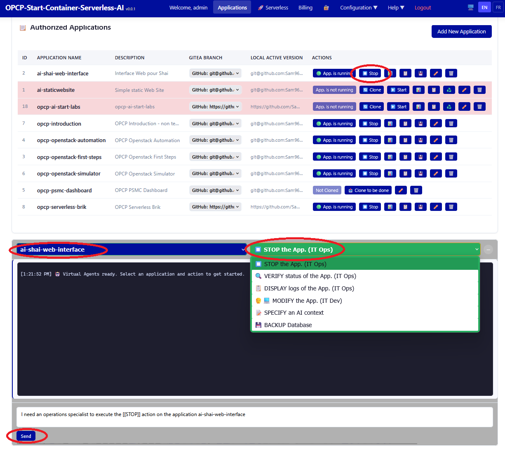

Stopping Applications with Agentic AI
Learn how to gracefully stop applications, understand the shutdown process, and manage resources after stopping containers.
Prerequisites
- Completed: Starting Applications
- At least one running application
What You Will Learn
- Graceful application shutdown procedures
- Stopping individual applications vs. the entire platform
- Cleaning up Docker resources (volumes, networks)
- Understanding shutdown hooks and data persistence
Stopping an Application

Use docker-compose to gracefully stop application containers:
# Stop a specific application
cd ~/deployments/<app_name>
docker-compose down
# Stop with volume cleanup (removes data)
docker-compose down -vStopping the Entire Platform
# Navigate to the platform directory
cd ~/opcp-agentic-ai-labs
# Stop all platform services
docker-compose down
Warning: Using
-v flag will remove associated volumes and data. Always create a backup before doing so.
Lab Available: A hands-on lab module accompanies this lesson. Start the lab to practice in an isolated environment.
Skill configuration: STOP_APP
This page's actions are driven by the STOP_APP agent skill. The prompt below is the exact configuration the agent follows to stop an application's running Docker containers.
Runtime placeholders: Tokens such as
{{APPLICATION_FOLDER}} and {{USER_ID}} are substituted with concrete values at runtime.
View the STOP_APP skill prompt (SKILL.md)
Please stop all running Docker containers for the specified user instance by executing the following steps.
IMPORTANT :
- all commands have to be executed in the application located {{APPLICATION_FOLDER}}.
- Execute all steps to deploy with the environment variable USER_ID={{USER_ID}}
#### 1. Calculate HTTP Ports, which are the ports used by the docker containers of the application. Use the following command:
source {{APPLICATION_FOLDER}}/conf/deploy.ini
RANGE_START=${RANGE_START:-6000}
RANGE_RESERVED=${RANGE_RESERVED:-100}
RANGE_PORTS_PER_APPLICATION=${RANGE_PORTS_PER_APPLICATION:-12}
if ! [[ "$USER_ID" =~ ^[0-9]+$ ]]; then
USER_ID=0
fi
PORT_NAMES=(
HTTPS_PORT HTTP_PORT
HTTPS_PORT1 HTTP_PORT1
HTTPS_PORT2 HTTP_PORT2
HTTPS_PORT3 HTTP_PORT3
HTTPS_PORT4 HTTP_PORT4
HTTPS_PORT5 HTTP_PORT5
)
PORT_RANGE_BEGIN=$((RANGE_START + USER_ID * RANGE_RESERVED))
base=$((PORT_RANGE_BEGIN + APPLICATION_IDENTITY_NUMBER * RANGE_PORTS_PER_APPLICATION))
offset=0
for name in "${PORT_NAMES[@]}"; do
printf -v "$name" '%s' "$((base + offset))"
export "$name"
offset=$((offset + 1))
done
#### 2. Stop the running application. Use the following commands to stop the application, based on the ports calculated during step 1:
echo "Stopping {{APPLICATION_NAME}} services..."
# Stop containers by name pattern
containers=$(docker ps -q --filter "name=${NAME_OF_APPLICATION}-.*-${USER_ID}-.*")
if [[ -n "$containers" ]]; then
docker stop $containers
docker rm $containers
echo "Services stopped successfully ✅"
else
echo "No running containers found for USER_ID: $USER_ID"
fi
**After completion, verify:**
- Networks are removed
- Volumes are preserved
- Report the final status
**Summary:** confirm all services are stopped.